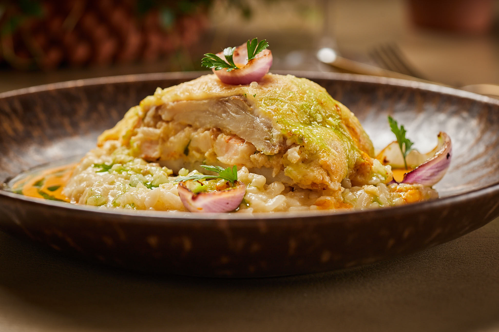

Filé de sol acebolado
Frango grelhado com ervas
Carne de panela ao molho da casa
Peixe grelhado com limão
Camarão ao molho regional
Self-service, receitas regionais e bar autoral em Boa Viagem.
Ver cardápioUma seção própria, como um cardápio paralelo: quente, variada e organizada por ilhas de buffet.

Filé de sol acebolado
Frango grelhado com ervas
Carne de panela ao molho da casa
Peixe grelhado com limão
Camarão ao molho regional
Penne ao tomate fresco
Talharim ao creme de cogumelos
Nhoque artesanal
Lasanha gratinada
Molhos branco, sugo e quatro queijos
Arroz branco
Arroz integral
Baião de dois cremoso
Arroz à piamontese
Arroz com legumes
Purê de macaxeira
Farofa crocante da casa
Pirão artesanal
Legumes gratinados
Saladas frescas e molhos leves
Maravi Moscatel 85 · Chandon Brut Rosé 178 · Chandon Baby 187 ml 40 · Chandon Brut 160 · Terra Nova Brut 75
Mar Salgado Rosé 85 · Cousino Macul Gris 99 · Obra Prima 85 · Casal Miranda Verde DOC 95
The Grill Master Chardonnay 79 · Vidal & Marcciard Sauvignon Blanc 110 · Don Mello de Uco Torrontés 120 · Coliman Chardonnay 97 · Urban Torrontés 83 · Osadia Sauvignon Blanc 92 · Montes Classic Reserva Chardonnay 155 · Taparaca Reserva Chardonnay 115 · Las Veletas Sauvignon Blanc 110 · Esporão Reserva Branco 295 · Aresti Estate Sauvignon Blanc 82,90
Cordelier Cabernet Sauvignon 79 · Casa Perini Cabernet/Merlot 91 · Amitie Pinot Noir 107 · The Grill Master Malbec 79 · Vista Calma Malbec 99 · Crios Malbec 145 · Vidal & Marcciard Malbec 110 · Chilano Merlot 79 · Osadia Carménère 99 · J. Lebegue Bordeaux 160 · Chianti Cecchi DOCG 137 · Esporão Reserva Tinto 295 · Aresti Cabernet Sauvignon 82,90
Camino de Chile Sauvignon Blanc 49 · Camino de Chile Cabernet Sauvignon 49 · Castelo de Pias taça 27 · Vinho do Porto 29 · Serviço de rolha 30
Rua Petrolina, 19 · Boa Viagem · Recife - PE
(81) 3334-8260 · WhatsApp (81) 99125-7788
@chicapitangarecife · chicapitanga@chicapitanga.com.br
Dinheiro, Pix, Mastercard, Maestro, Elo, Visa, Visa Electron, Alelo e Ticket.